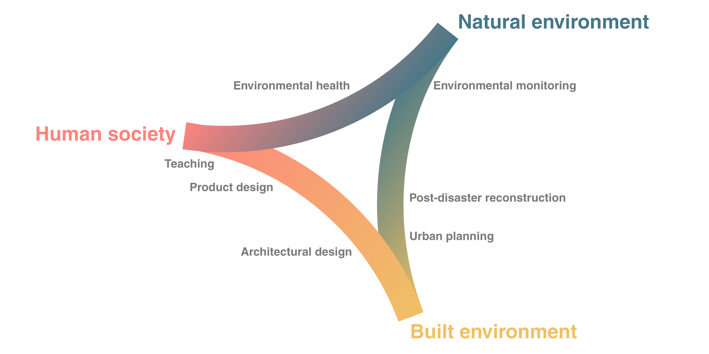
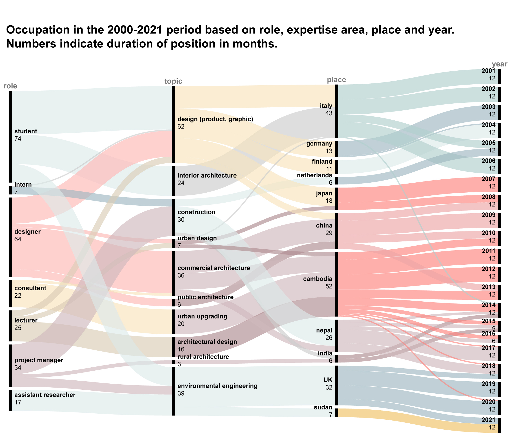

I have spent the last 20 years by studying and working on different aspects of the relationship between human society, the built and the natural environment.

Between 2000 and 2010 I have studied and worked in design and architecture exploring the cultural and socio-economic drivers that shape the built environment. In 2010, after relocating to Cambodia I started working as a consultant and contractor in the development sector. I have designed urban upgrading in informal settlements, small community centres. In Nepal I had the opportunity of being part of the post-earthquake response and reconstruction. Then, in 2018, I went back to study to better understand the relationship between the built and the natural environment. I was part of research projects on water quality and environmental risk assessment. This was also agreat opportunity to acquire from academia a stronger work methodology.
Now, in 2022, I am looking forward to go back to work in the field, ideally above 2500m from sea level.

Portfolio
CV (development sector)
CV (private sector)
Linkedin profile